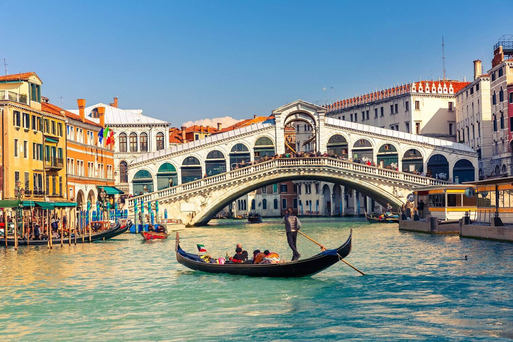

Destinos em Destaque

Paris, França
A Cidade Luz, com a icônica Torre Eiffel, museus mundialmente famosos e a culinária irresistível. Explore os encantos de Paris.

Veneza, Itália
Navegue pelos canais românticos de Veneza e maravilhe-se com a arquitetura única desta cidade única no mundo.
Dicas de Viagem
- Antes de viajar para a Europa, certifique-se de verificar os requisitos de visto e documentação necessários para o seu país de origem.
- O clima na Europa varia significativamente de região para região. Verifique as previsões para sua época de viagem e planeje-se adequadamente.
- A Europa possui uma excelente rede de transporte público, incluindo trens de alta velocidade, ônibus e voos internos. Considere a Eurail Pass para uma viagem de trem conveniente.
- Não deixe de provar os pratos locais em cada destino. A Europa é famosa por sua culinária diversificada, desde a comida italiana até os pratos típicos gregos.